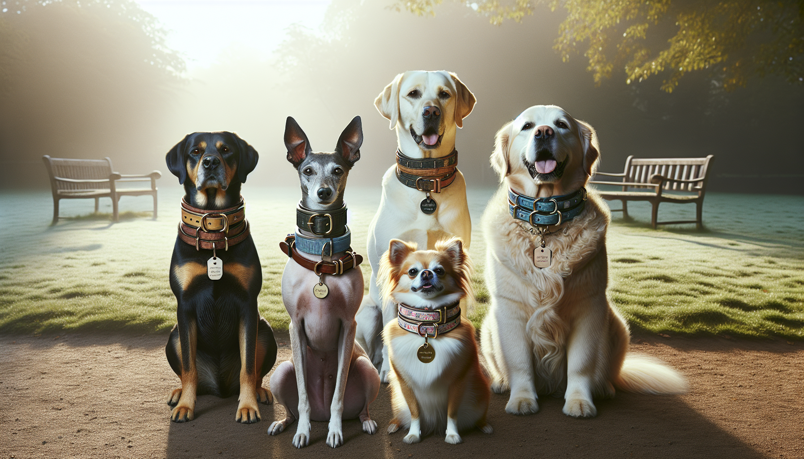

Choosing a dog collar sounds simple at first, but any pet owner knows there is a lot more to it than picking a cute color and calling it a day. The right collar should match your dog’s breed, size, coat type, activity level, and personality. It should also feel comfortable, support safety, and look great whether your pup is heading out for a neighborhood walk or posing for adorable photos.
For dog lovers and thoughtful gift shoppers alike, a collar is one of the most useful and personal accessories you can buy. It is something dogs wear every day, which means the right choice can make a big difference in comfort and confidence. If you have ever wondered how to choose the right dog collar for your breed, this guide will help you narrow down the best options with ease.
Every breed has unique physical traits, and those traits matter when selecting a collar. A dainty toy breed will not need the same type of collar as a muscular working dog, and a long-necked breed may require a different shape than a broad-chested pup.
Here are a few examples:
When in doubt, think about your dog’s body shape rather than just the breed label. A collar should sit securely without pinching, slipping, or overwhelming your dog’s frame.
Even the most beautiful collar will not work well if the fit is off. A collar that is too tight can cause discomfort and skin irritation. Too loose, and your dog may slip out of it during a walk or while playing outside.
The easiest rule is the two-finger test. Once the collar is on, you should be able to slide two fingers comfortably between the collar and your dog’s neck. This gives enough room for comfort without sacrificing security.
To measure correctly:
This is especially important for fluffy breeds like Pomeranians or Huskies, where fur can make a collar seem looser than it really is. For short-haired dogs, rubbing and chafing may become obvious sooner, so a precise fit matters even more.
Material plays a major role in durability, comfort, and appearance. Some dogs need a collar that can handle mud, water, and rough play, while others are happiest in something soft, stylish, and lightweight.
Popular collar materials include:
If your dog is an enthusiastic swimmer, trail hiker, or backyard explorer, a washable and weather-friendly collar may be your best choice. If your pup is more of a cuddle-on-the-couch type, you may prioritize softness and style.
Safety should always come first when choosing a collar. Different breeds have different walking habits, energy levels, and escape tendencies, so it is smart to think about how your dog behaves in real life.
Some key safety considerations include:
It is also worth noting that collars and harnesses serve different purposes. Some breeds, especially those prone to trachea sensitivity or heavy pulling, may do better walking on a harness while still wearing a collar for ID. That combination often gives pet owners the best of both worlds.
Collar width is often overlooked, but it can have a huge impact on comfort. A collar that is too narrow may dig in, especially on larger dogs. A collar that is too wide may feel awkward on a tiny breed.
As a general guide:
Coat type matters too. Long-haired breeds may benefit from smoother materials that reduce matting and tangles. Short-haired breeds may appreciate extra softness or padding to prevent friction. If your dog scratches around the collar area often, it may be a sign that the width or material needs adjusting.
Once you have covered fit, safety, and function, the fun part begins. A dog collar is one of the easiest ways to show off your pup’s personality. From bright colors and playful prints to elegant neutrals and custom engraving, the right collar can feel like an extension of your dog’s unique charm.
Think about what suits your dog best:
Personalized collars are especially popular with gift shoppers because they combine beauty and practicality. Adding a dog’s name or contact details creates a thoughtful touch while helping with identification. It is a small detail that can make a big difference.
Even a high-quality collar will not last forever. Dogs grow, hardware wears down, and materials can stretch or fray with daily use. Checking your dog’s collar regularly is part of being a responsible pet owner.
Signs it may be time for a replacement include:
Many pet owners also like to keep more than one collar on hand, such as an everyday collar, a special occasion collar, and a water-friendly option for adventures. This can help extend the life of each one while making sure your dog always has a suitable choice.
When it comes to choosing the right dog collar for your breed, there is no one-size-fits-all answer. The best collar is the one that fits comfortably, supports your dog’s safety, suits their breed traits, and reflects their personality. By considering size, shape, material, width, and lifestyle, you can choose a collar that feels just right for your furry friend.
Whether you are shopping for your own dog or searching for a thoughtful gift for a fellow dog lover, a well-chosen collar is both practical and meaningful. It is one of those everyday pet essentials that can bring together comfort, style, and peace of mind.
Ready to find something special for your pup? Shop personalized pet products at SnoutAndAbout on Etsy.